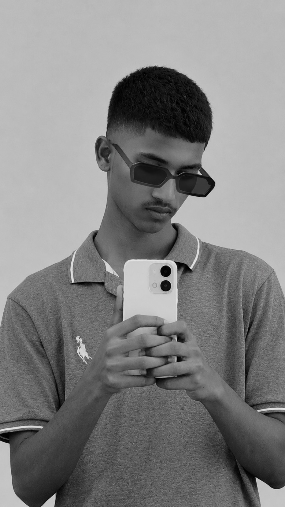

Programming
Learning programming fundamentals and developing logical thinking through practice.
COMPUTER SCIENCE STUDENT
I’m a first-year Computer Science student who enjoys exploring technology, learning new skills, and turning ideas into useful projects.

01 / ABOUT ME
I believe every new skill begins with curiosity.
My name is Santhosh, and I am pursuing a B.Tech in Computer Science and Engineering at the Indian Institute of Information Technology, Raichur. I am at the beginning of my journey in computer science, building a strong foundation in programming and computing.
I enjoy learning by doing, asking questions, and improving step by step. This website is a small introduction to who I am and what I am learning.
02 / EDUCATION
| Stage | Institution | Area | Status |
|---|---|---|---|
| Undergraduate | IIIT Raichur | B.Tech — CSE | Pursuing |
| Intermediate | Narayana College | MPC | 98.6 marks |
The earlier-education row is a placeholder. Update it with your actual school or college details before submission.
03 / SKILLS & INTERESTS
Learning programming fundamentals and developing logical thinking through practice.
Exploring how computers, operating systems, and digital systems work.
Interested in creating clean, useful, and easy-to-use web experiences.
MY INTERESTS
04 / BEYOND STUDIES
I enjoy writing code, practising programming problems, and learning how to build useful things with technology.
Gaming is one of the ways I relax, have fun, and enjoy a little friendly competition in my free time.
I like discovering new tools, websites, and ideas that help me learn more about the digital world.
05 / CAMPUS LIFE
A place to learn, collaborate, and grow.
I am pursuing my B.Tech in Computer Science and Engineering at the Indian Institute of Information Technology Raichur. Campus life is an important part of my student journey, giving me opportunities to learn with classmates, take part in academic activities, and develop both technical and personal skills.
I look forward to making the most of lectures, peer learning, projects, and campus experiences throughout my time here.
Visit official IIIT Raichur website ↗This section describes my campus experience in general. Add your own campus photos and specific facilities or clubs you have personally visited or joined.
06 / MY PROJECTS
PERSONAL PORTFOLIO / 2026
Hi, I'mWEB DEVELOPMENT · 01
This is my personal portfolio website, created as part of the CS101: Introduction to Computer Science assignment. It introduces me, shares my education and interests, and presents my learning goals in one place.
07 / GOALS
08 / GET IN TOUCH
I’m always open to learning, sharing ideas, and connecting with fellow students and technology enthusiasts.
Send me an email ↗